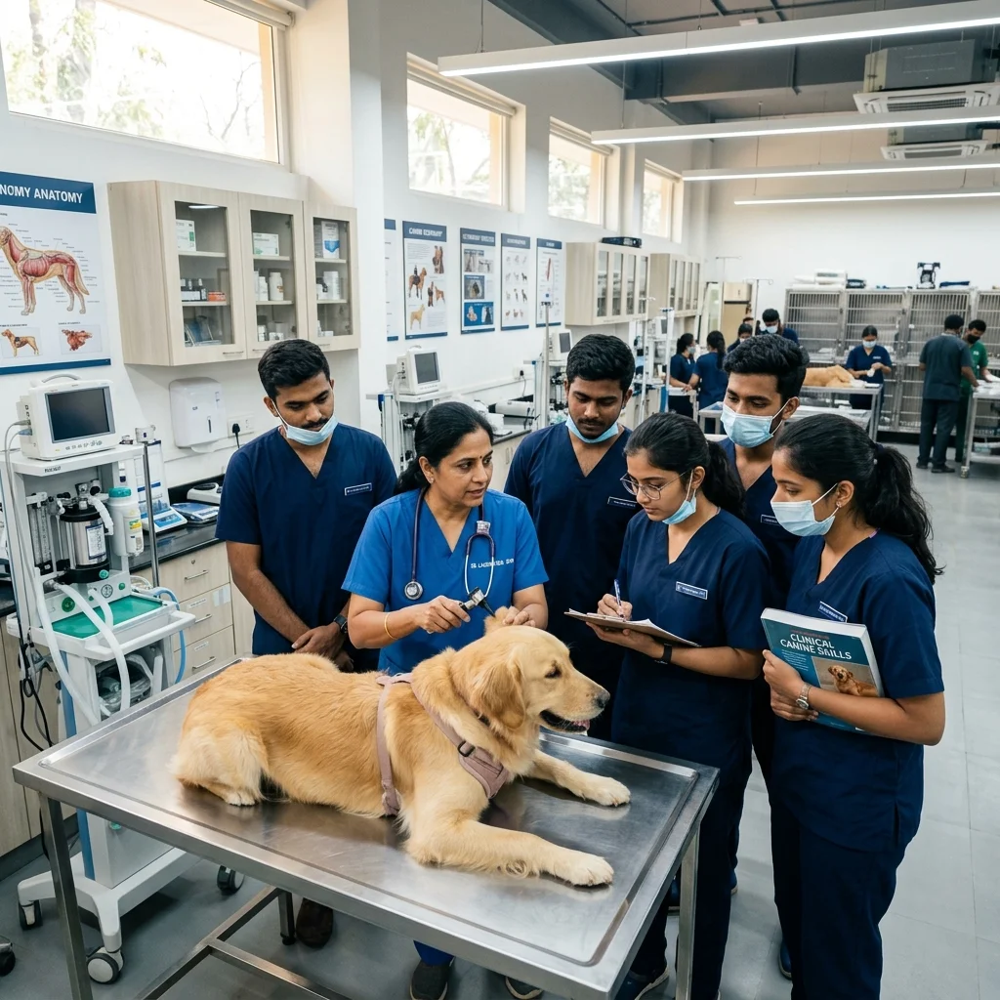
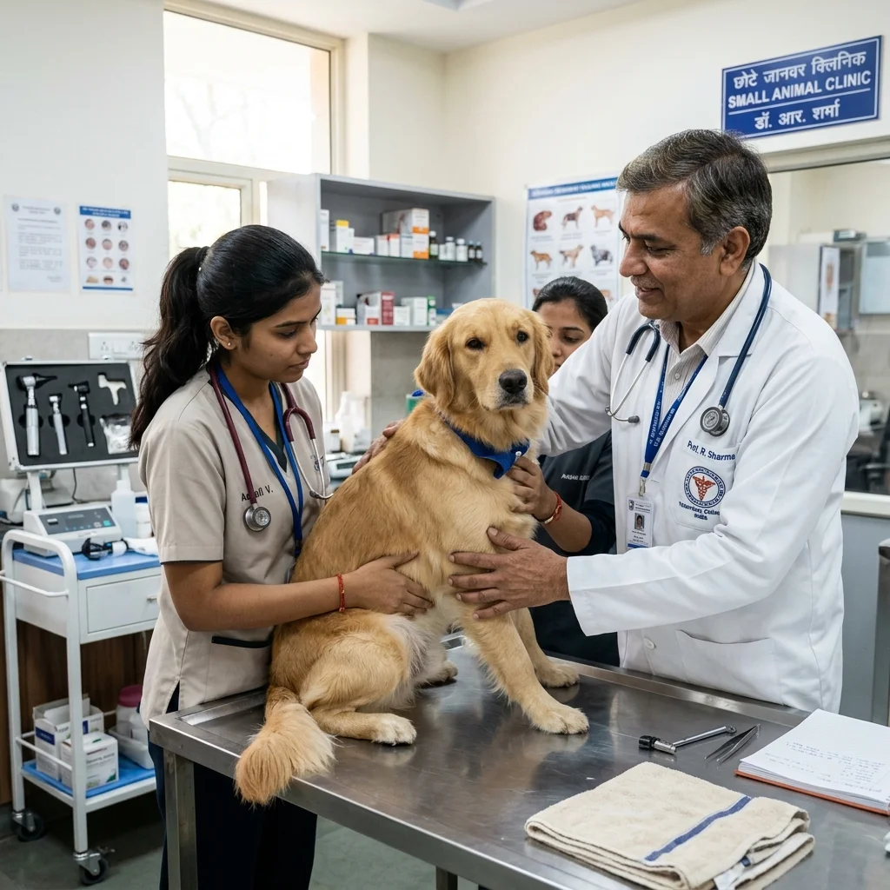
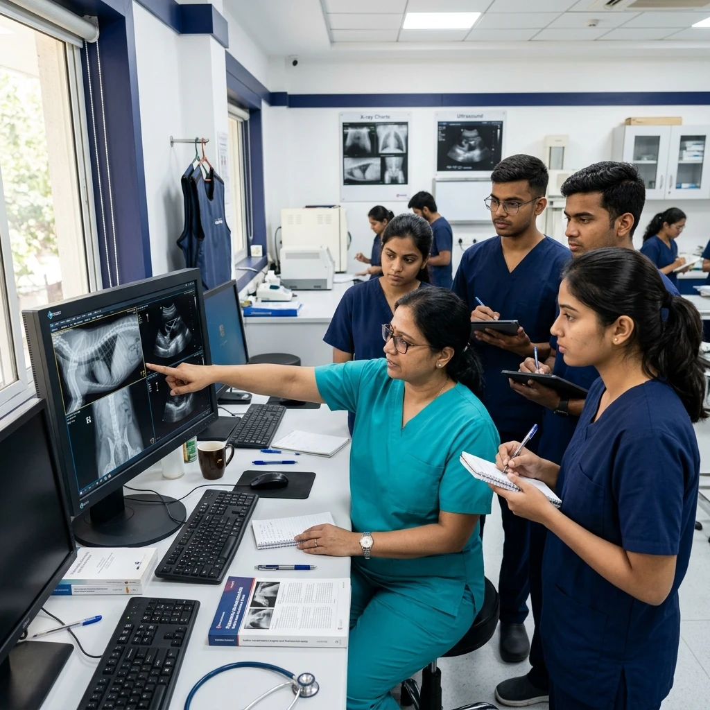

Veterinary Skill-Up & Clinical Mastery Program
Master real veterinary procedures through hands-on wet labs, live demonstrations, case-based learning, and expert faculty guidance designed for veterinary professionals and final-year students.
- 80+ Hours Live Practical Sessions
- Industry Recognized Skill Certificate
- Small Batch Learning (Max 12)
- Specialist Veterinary Mentors
- Career Guidance & Clinic Support

🎓 Industry Certified 👨⚕️ Specialist Faculty 🩺 Live Surgical Practice ⭐ 4.9 Student RatingThe Clinical Reality Fresh Vets Face
Why standard university lectures leave a gap between passing exams and running independent clinic shifts.

From Textbook Theory to High-Stakes Surgery
Graduating with a BVSc degree is a proud achievement. However, when stepping into private practice or emergency night shifts, many young doctors experience sudden surgical hesitation:
What You'll Graduate Ready To Do
Develop practical confidence through structured clinical exposure, supervised procedures, and hospital-standard veterinary training.
 120+ Practical Clinical Hours
120+ Practical Clinical Hours
Clinical Transformation
- Theory-focused learning
- Limited procedural practice
- Observational clinical exposure
- Hesitation during independent cases
- Comprehensive clinical skills
- Independent procedure handling
- Multi-specialty diagnostic confidence
- Hospital-ready clinical execution
Clinical Examination
Master systematic physical examination, vital signs assessment, and diagnostic history taking.
Soft Tissue Surgery
Perform routine & emergency soft tissue surgical procedures under sterile OR protocols.
Radiology
Position patients accurately and interpret digital CR/DR thoracic and abdominal radiographs.
Ultrasound Scanning
Operate ultrasound probe controls and perform abdominal FAST scans for emergency fluid detection.
Emergency Triage
Execute rapid triage, RECOVER CPR algorithms, fluid resuscitation, and shock management.
Professional Certification
Complete practical faculty assessment and earn institutional competency credentials.
Select Your Learning Track
Structured hands-on modules designed for BVSc interns, fresh graduates, practicing clinicians, and vet assistants.
Veterinary Skill-Up Program
4-Week comprehensive clinical mastery module covering soft tissue surgery, digital radiology reading, ultrasound scanning, and emergency triage.
Soft Tissue Surgery Track
Intensive hands-on procedural workshop covering sterile OR setup, tissue handling, suture patterns, spay/neuter, and intestinal cystotomy closures.
Radiology & Ultrasound Masterclass
Systematic abdominal & thoracic radiograph interpretation alongside hands-on abdominal ultrasound probe handling and FAST scanning.
Pet Emergency & Critical Care
Handling shock, toxic ingestion, cardiac arrest, fluid resuscitation, multiparameter vitals monitoring, and emergency patient triage.
Vet Nurse Foundation Certificate
Foundational practical training for clinic assistants and paravet staff covering animal restraint, surgical scrub support, catheter prep, and sanitization.
Pet Emergency First Aid Workshop
Designed for pet parents, rescuers, and animal lovers to stabilize pets during life-threatening choking, bleeding, or heat stroke emergencies before reaching vet clinics.
Course Curriculum
Step-by-step 4-week syllabus designed for maximum procedural exposure and tactile repetition.
Surgical Dexterity & Sterile Technique
Mastering instrument handling, suture pattern selection, sterile field preparation, and tissue handling mechanics on anatomical models.
- Instrument ergonomics: Needle holder grips, thumb forceps, tissue scissors.
- Suture patterns: Simple interrupted, continuous, Ford interlocking, subcuticular.
- Aseptic gowning, scrubbing, draping & instrument tray setup.
- Practical Lab: 20+ hours knot-tying and model incision closure practice.
Soft Tissue Procedures & Abdominal Surgery
Step-by-step procedural execution for common canine and feline surgeries with specialist mentor supervision.
- Canine & Feline Spay (Ovariohysterectomy) and Neuter (Castration) techniques.
- Cystotomy for urolith removal and bladder closure integrity testing.
- Intestinal gastrotomy & enterotomy closure protocols.
- Practical Lab: Hands-on surgical suite procedural execution.
Diagnostic Radiology & Ultrasound Scanning
Systematic interpretation of abdominal and thoracic X-rays alongside abdominal ultrasound probe positioning.
- X-Ray positioning: Orthogonal views, contrast studies, radiograph artifact identification.
- Thoracic & abdominal radiograph reading: Heart size, lung patterns, foreign bodies.
- AFAST & TFAST ultrasound protocols for fluid accumulation identification.
- Practical Lab: Live machine scanning and X-ray case study library reading.
Emergency Triage, Anesthesia & Clinic Practice
High-pressure emergency response, anesthetic monitoring, and client consultation communication strategies.
- Endotracheal intubation, IV catheter placement & fluid rate calculations.
- Managing hypotension, hypothermia, and anesthetic arrest (CPR).
- Client communication, surgical consent, and post-op analgesia plans.
- Practical Lab: Simulated emergency patient triage and capstone practical exam.
Training Format & Delivery
Designed to fit the schedules of busy interns, fresh graduates, and practicing doctors.
100% Offline Campus
3,000 sq. ft. dedicated Wagholi Pune center equipped with modern surgical and diagnostic suites.
Small Batch Size
Strictly capped at 12 doctors per batch to guarantee direct 1-on-1 specialist guidance.
80+ Hands-On Lab Hours
80% of total curriculum spent executing tactile procedures on models and simulated cases.
Live Case Discussions
Daily morning grand rounds discussing real clinical cases, diagnostic X-rays, and bloodwork.
Who Should Join
Whether you are entering practice or expanding surgical scope, this module is built for you.
BVSc Final-Year Interns
Build confidence before completing college internship to secure top clinic job offers immediately upon graduation.
Fresh Graduates (0-2 Yrs)
Bridge the gap between theoretical knowledge and practical surgical execution under mentor oversight.
Practicing Veterinarians
Expand your clinic's surgical and diagnostic capabilities to offer advanced soft tissue surgeries in-house.
Clinic Owners & Leads
Standardize procedural protocols and train junior associate doctors for consistent hospital care standards.
Meet Your Faculty
Learn directly from senior practicing surgeons, radiologists, and emergency specialists.

Dr. Amit Kulkarni
BVSc & AH, MVSc (Surgery)Soft Tissue Surgery & Wound Management Lead.

Dr. Priya Sharma
BVSc & AH, MVSc (Radiology)Diagnostic Radiology & Abdominal Ultrasound Trainer.

Dr. Rajesh Verma
BVSc & AH, MVSc (Medicine)Emergency Triage & Critical Care Resuscitation Lead.
Industry-Recognized Certification
Upon successful completion of the 4-week program and practical assessment, graduates receive a formal VetNova Certificate of Skill Competency.
Program Fee & Payment Options
Transparent pricing with zero hidden costs. Includes all surgical lab materials and instruments.
Veterinary Skill-Up Program
Complete 4-Week Offline Practical Mastery Module
- 80+ Hours surgical & diagnostic lab access
- All surgical suture models & instruments included
- 1-on-1 Specialist mentor feedback
- Verified course completion certificate
- 3-Month No-Cost EMI Options available
Program FAQs
Everything you need to know about batch dates, prerequisites, and accommodation assistance.
The program is open to BVSc & AH students currently undergoing their final-year internship, fresh graduates, and practicing veterinary doctors looking to upgrade their surgical and diagnostic capabilities.
To ensure personal mentor attention, batch sizes are strictly capped at 12 doctors per batch.
Yes, we assist outstation trainees with verified PG and hostel partner recommendations located within 10 minutes of our Wagholi, Pune campus.
Yes! Over 80% of total curriculum hours are dedicated to tactile procedural execution on anatomical simulation models, suture pads, and guided clinical demonstrations.
What Our Trainees Say
Hear from doctors who completed the Skill-Up program and transformed their clinical career confidence.
Ready to Advance Your Veterinary Career?
Join the next batch of the Veterinary Skill-Up Program and transform your surgical and diagnostic confidence with direct specialist mentorship.